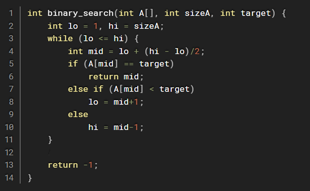
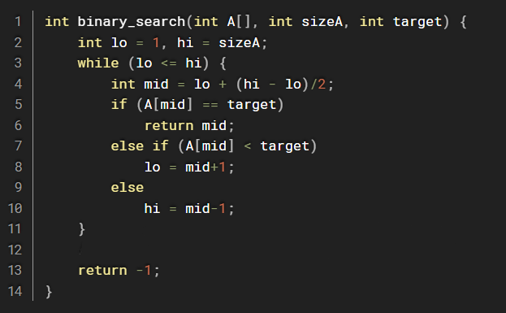

BINARY SEARCH
Writer: Arya
KNOWLEDGE YOU NEED TO KNOW
INTRODUCTION
Binary search is one of the fundamental algorithms in computer science. In this article, we will build a theoretical foundation, and then provide an accurate implementation of this algorithm.In this article, we will build a theoretical foundation, then provide a precise implementation of this algorithm.
HOW BINARY SEARCH WORKS
Initial Setup: If the array remains unsorted, sort it. Define the search range with two pointers: low (start of the array) and high (end of the array).
Divide and Conquer:
-Calculate the middle index: mid = low - (high-low)/2
-Compare the middle element with the target value:
+If it matches, return the index.
+If the middle element is greater than the target, search the left half.
+If the middle element is less than the target, search the right half.
Repeat:
-Narrow the search range and repeat until the target is found or the search range is empty.
 

CONCLUSIONS
Binary search is a foundational concept in computer science, forming the basis for more advanced algorithms and techniques. Mastering it equips you to solve a variety of search-related problems efficiently.